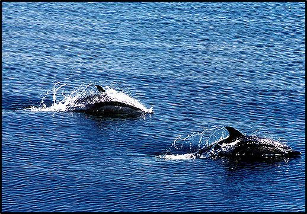

- Χελώνα Caretta caretta.
- Χελώνα Caretta caretta. Α. Ψάρια
Υπάρχουν πάρα πολλά είδη ψαριών. Αναφέρουμε χαρακτηριστικά είδη που συναντάμε στις ελληνικές θάλασσες και ιδιαίτερα στην περιοχή του Θρακικού πελάγους και της Σαμοθράκης όπως: ο μπακαλιάρος, ο χάνος, η τσέρουλα, το καπόνι, το μαγιάτικο, το μελανούρι, η πέρκα, ο ροφός, ο σαργός, το σκαθάρι, η συναγρίδα, η τσιπούρα, το φαγγρί και πολλά άλλα. Περισσότερες λεπτομέρειες για τα χαρακτηριστικά κάποιων από τα ψάρια αυτά, αναφέρονται στο κεφάλαιο που αφορά την θαλάσσια πανίδα της περιοχής.
Β. Θαλάσσια ερπετά
- Χελώνα Caretta caretta.
Η χελώνα αυτή είναι η πιο κοινή θαλάσσια χελώνα της Μεσογείου. Ζει στα θερμότερα νερά του Ατλαντικού, στη Μεσόγειο, στη Μαύρη Θάλασσα, στον Ινδικό και τον Ειρηνικό Ωκεανό. Τρέφεται κυρίως με μέδουσες και σάλπες στα βαθιά νερά και με μαλάκια, καρκινοειδή, εχινόδερμα και σπόγγους στα πιο αβαθή νερά. Η Caretta caretta είναι το μοναδικό είδος θαλάσσιας χελώνας που αναπαράγεται στην Ελλάδα. Οι κύριες παραλίες ωοτοκίας βρίσκονται στη Ζάκυνθο, στη δυτική και νότια Πελοπόννησο και στην Κρήτη. Η Caretta caretta αποτελεί σοβαρά απειλούμενο είδος. Οι σοβαρότεροι κίνδυνοι που διατρέχει είναι η καταστροφή και η υποβάθμιση των περιοχών ωοτοκίας κυρίως λόγω τουριστικής ανάπτυξης, η εμπλοκή τους σε θαλάσσια δίκτυα, η θανάτωση από τα σκάφη και η ρύπανση από πλαστικά,βαρέα μέταλλα και υδρογονάνθρακες.
Γ. Θαλάσσια Θηλαστικά
- Φώκια Μonachus monachus
Οι φώκιες (Monachus monachus) συναντώνται σε πολλά σημεία των ελληνικών θαλασσών. Ο συνολικός τους πληθυσμός υπολογίζεται σε 150-300 άτομα, με σημαντικότερη συγκέντρωση στις βόρειες Σποράδες. Η μεσογειακή φώκια ήταν πολύ γνωστή στους αρχαίους Έλληνες και τους Ρωμαίους. Αναφέρεται από τον Όμηρο, τον Αριστοτέλη και τον Πλούταρχο. Στην Ελληνική μυθολογία αναφέρεται επίσης, όπου έχοντας αφιερωθεί στον Απόλλωνα και στον Ποσειδώνα, έδωσε αφορμή για την γέννηση πολλών μύθων και προλήψεων. Η φώκια εμφανίζεται σε ελληνικά νομίσματα του 500 π.Χ. καθώς και σε αρχαία μωσαϊκά.
Η Μεσογειακή φώκια είναι μια από τις μεγαλύτερες φώκιες που υπάρχουν. Το μήκος της φτάνει μέχρι τα τρία μέτρα και το βάρος της φτάνει μέχρι και τα 300 κιλά για τη θηλυκή. Είναι ένα θαλάσσιο θηλαστικό, ήρεμο και φιλικό, που έγινε όμως δύσπιστο με τις συνεχείς οχλήσεις από τους ανθρώπους. Προτιμά απομονωμένους χώρους, ακτές και βραχώδη νησιά με σπηλιές και παραλίες με χαλίκια, όπου κοιμάται αναπαράγεται ή ανατρέφει τα μικρά της. Σήμερα ο μεγαλύτερος κίνδυνος που αντιμετωπίζει η Μεσογειακή φώκια είναι η όχληση από τις αυξημένες δραστηριότητες των ανθρώπων στο θαλάσσιο περιβάλλον, οι οποίες επιδρούν στην αναπαραγωγή, την θνησιμότητα και την διαθέσιμη τροφή.
- Δελφίνια
Οι αρχαίοι μας πρόγονοι ονόμαζαν τα δελφίνια, «λαό της θάλασσας» και όποιος τα σκότωνε, αντιμετώπιζε ως ποινή τον θάνατο. Επίσης, θεωρούσαν το δελφίνι, τον κυρίαρχο της θάλασσας. Σε απεικονίσεις μαζί με άλλα όντα, αντιπροσωπεύει τη θάλασσα, όντας το πιο κατάλληλο σύμβολο του υγρού στοιχείου. Διάφοροι μύθοι της αρχαιότητας εξηγούν την στενή σχέση του δελφινιού με τους ανθρώπους.
Από την αρχαιότητα μέχρι σήμερα, το δελφίνι απασχόλησε τους φυσικούς επιστήμονες και υπήρξε πηγή έμπνευσης για τους καλλιτέχνες και συντροφιά για τους θαλασσινούς ταξιδευτές. Μερικές από τις πιο όμορφες δημιουργίες των εικαστικών τεχνών, αποθανάτισαν την όμορφη εικόνα του και τις ιστορίες που συνδέθηκαν με αυτό.
Μελέτες έδειξαν ότι το θηλαστικό αυτό έχει ιδιαίτερα ανεπτυγμένη νοημοσύνη, εξαιρετική ακοή και έχει αναπτύξει εκπληκτικούς κώδικες επικοινωνίας με τους συντρόφους του.
Τα δελφίνια και οι φάλαινες, ανήκουν στα κήτη ή κητώδη. Τα δελφίνια, όπως και όλα τα κήτη είναι σαρκοφάγα. Τρέφονται με ψάρια, κεφαλόποδα, καρκινοειδή και πολλούς άλλους ζωϊκούς οργανισμούς.
Έως σήμερα, είναι γνωστά πάνω από 30 είδη δελφινιών. Τα δελφίνια ζουν σε όλα τα θαλάσσια περιβάλλοντα, δηλαδή σε πελαγίσια και παράκτια νερά, σε τροπικά, εύκρατα και ψυχρά κλίματα.
Στις Ελληνικές θάλασσες έχουν εντοπιστεί τέσσερα είδη μικρόσωμων δελφινιών και τρία μεγαλόσωμα. Στην υπόλοιπη Μεσόγειο έχουν εντοπιστεί επιπλέον άλλα τέσσερα είδη δελφινιών. Συνολικά η Μεσόγειος, με το 1% του παγκόσμιου θαλάσσιου νερού, φιλοξενεί το 1/3 των δελφινιών του κόσμου.
Στην ευρύτερη περιοχή του Θρακικού πελάγους έχουν καταγραφεί αρκετοί πληθυσμοί των παρακάτω τριών ειδών δελφινιών:
α) Το κοινό δελφίνι (Dolphinus dolphis)
Είναι ένα μικρό δελφίνι, γύρω στα δύο μέτρα, με μακρύ και λεπτό ρύγχος, με μαύρη ράχη και άσπρη κοιλιά, ενώ στα πλευρά του έχει περίπλοκα αλλά χαρακτηριστικά χρωματικά σχέδια. Βρίσκεται σε ορισμένες ελληνικές θάλασσες, όπου κολυμπά σε ομάδες συχνά ακολουθώντας τα πλοία και πηδώντας έξω από το νερό. Η μεγαλύτερη απειλή για το κοινό δελφίνι, είναι η έλλειψη τροφής λόγω της υπεραλίευσης, καθώς επίσης και το κυνήγι από τους ψαράδες επειδή καταστρέφουν τα δίχτυα τους.
β) Το ζωνοδέλφινο (Stenella coeruleoalba)
Μοιάζει με το κοινό δελφίνι, αφού έχει και αυτό γραμμώσεις πάνω στο σώμα. Η διαφορά είναι ότι το ζωνοδέλφινο δεν έχει ποτέ καφέ και κιτρινωπές αποχρώσεις στα πλευρά. Το μήκος του φθάνει τα δύο μέτρα περίπου. Είναι καθαρά πελαγίσιο είδος και περνάει απλώς από παράκτια νερά κινούμενο σε ομάδες αρκετών δεκάδων ατόμων. Αντιμετωπίζει τους ίδιους κινδύνους με το κοινό δελφίνι.
γ) Η φώκαινα (Phoceona phoceona)
Η φώκαινα είναι το μικρότερο από όλα τα κητώδη με μήκος μέχρι 1,80 μέτρα. Συνήθως ζει σε ψυχρά νερά, μετακινούμενο σε βάθη μικρότερα των 50 μέτρων. Προτιμάει παράκτιες θάλασσες, ιδιαίτερα κόλπους και περιοχές κοντά σε εκβολές ποταμών. Κολυμπά αργά και δεν πηδά έξω από το νερό όπως κάνουν τα άλλα δελφίνια. Τρέφεται με ψάρια, καρκινοειδή και κεφαλόποδα. Η φώκαινα θεωρείται απειλούμενο ζώο σε όλη την περιοχή εξάπλωσής του. Οι κύριοι κίνδυνοι που αντιμετωπίζει είναι η έλλειψη τροφής λόγω της μείωσης των ιχθυοαποθεμάτων και η εμπλοκή στα δίκτυα των ψαράδων.